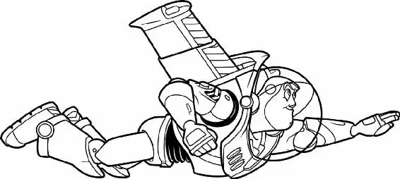

As Sid leaped off his skateboard and headed up the front path to his house, Buzz peeked out of Sid’s backpack.
“Sheriff,” Buzz whispered to Woody, who was squeezed in next to him. “I can see your dwelling from here. You’re almost home.”
The squeaky alien Sid had won wriggled up between them. “Nirvana is coming! The mystic portal awaits!”
“You guys don’t get it, do you?” Woody cried. “Once we go inside Sid’s house, we won’t be coming out.”
Sid opened his front door to a barking Scud, who pounced at the backpack.
“Scud! Hey, boy! Sit!” said Sid, holding his backpack in front of Scud. The dog obeyed with a growl.
“Good boy. Hey, I got something for you, boy.”
Woody pressed himself down into the pack as Sid’s hand plunged inside. Squeak! The alien toy was smiling as Sid yanked it out and placed it on the dog’s snout.
“Ready, set, now!” Sid commanded. Scud flipped the alien up into the air, caught it in his mouth, and began to shake it back and forth ferociously. Buzz and Woody looked on in horror.
Sid shoved open the door and, without wiping his feet, stomped inside. “Hey, Hannah!” Sid’s little sister stood in the front hall holding a worn-looking Janey Doll.
“Did I get my package in the mail?” Sid asked.
“I dunno,” Hannah replied.
“What do you mean, you don’t know?” demanded Sid.
“I don’t know!” insisted Hannah.
Sid’s eyes narrowed. “Oh, no, Hannah! Look—Janey!” He snatched the doll from her hands. “She’s sick! I’ll have to perform one of my… operations!”
“No!” Hannah cried. “Don’t touch her!”
Sid ran upstairs to his room and slammed the door in Hannah’s face. He threw his backpack on the bed. Woody and Buzz peeked out. They watched, stunned, as Sid clamped the Janey Doll’s head in a vise and began to “operate,” grabbing various items from his makeshift workbench.
“Hannah?” Sid called when he was finished. He went to the door and flung it open. “Janey’s all better now,” he said to his worried-looking sister as he handed her the doll.
Hannah shrieked. Janey’s head was gone, and in its place was the head of a plastic pterodactyl. “Mom!” Hannah screamed as she turned and ran.
Sid tossed the doll over his shoulder and chased after Hannah, trying to get to his mother first. “She’s lying! Whatever she says, it’s not true!” he cried as the door slammed shut behind him.
Buzz and Woody took in their surroundings. Sid’s room was a disaster. There were posters of heavy-metal bands on the wall. The bed was unmade. Dirty clothes, discarded toy parts, and power tools littered the floor. Shadows lurked in every corner.
“We are gonna die,” Woody moaned as he climbed out of the backpack, ran across the bed, and dived onto the doorknob. “I’m outta here!”
But the door was locked from the outside. Woody dropped to the floor. “There’s got to be another way out.” A strange rustling sound made him turn.
A plastic yo-yo rolled quietly across the floor, then fell on its side. Woody grabbed a pencil from the floor and held it like a weapon. A shadow floated past him. He whirled around but saw nothing.
“Buzz? Was that you?” Woody called in fear, dropping the pencil and snatching a nearby flashlight. He heard a noise from under Sid’s bed. He turned on the flashlight and pointed it in the direction of the noise.
A face inched into the light, and Woody sighed in relief. It was only the head of a baby doll. “Hi there, little fella! Come out here. Do you know a way out of here?” The head moved forward out of the shadows.
Woody choked down a scream. The doll head was mounted on a spider-like body made from the parts of an Erector set. With a soft whirring sound, the baby-faced creature stretched its metal legs until it towered over the astonished cowboy.
Woody glanced nervously around the room. Other strange mutilated toys darted out from the shadows. There were a toy fishing pole with fashion-doll legs, a skateboard with a soldier’s torso screwed onto its front end, a jack-in-the-box with a rubber hand for a head, and many other frightening creations.
Woody clambered back up onto the bed and cowered behind Buzz. They watched as the mutants dragged all the Janey Doll and pterodactyl parts into the shadows.
Woody’s guts lurched. “They’re cannibals!” He leaped into the backpack, with Buzz right behind him.
Buzz punched a button on his chest. “Mayday! Come in, Star Command. Send reinforcements!” He paused. “Star Command, do you copy?”
No response. Buzz sighed and adjusted a knob on his suit. Blip! “I’ve just set my laser from stun to kill,” he told Woody.
“Great,” Woody muttered. “If anyone attacks us, we can blink ’em to death.”
Next door, Rex pointed a flashlight through Andy’s bedroom window into the dark bushes below. Bo Peep, Mr. Potato Head, and the other toys looked on, hoping to spot Buzz.
Suddenly, they heard a car approaching. Rex turned off the flashlight, and they watched as the Davises’ van pulled into the driveway. As Mrs. Davis hopped out to unbuckle Molly from her car seat, Andy climbed out of the van and began looking under the backseat. Then he searched the front seats, too.
“He’s not here, Mom. Woody’s gone!”
Upstairs, the toys looked at one another.
“Woody’s gone?” Bo Peep gasped.
“The weasel ran away!” Hamm cried.
“I told you he was guilty,” Mr. Potato Head bragged.
One by one, the toys moved away from the window, until only Slinky and Bo Peep were left.
“Oh, Slink, I hope he’s okay,” said Bo Peep.
“A survivor!” Sid’s voice rang out the following morning. He snatched Woody up and sent him flying across the room. Woody landed on the floor, hard.
“I can see your will is strong,” said Sid. “Well, we have ways of making you talk.”
Sid opened the blinds. Bright sunlight slanted sharply through the windowpane. He pulled out a magnifying glass and slowly, carefully, directed a beam of sunlight onto Woody’s face.
After a few moments, a tiny wisp of smoke curled up from Woody’s forehead as it began to burn.
“Sid!” his mother shouted from downstairs.
“Your Pop-Tarts are ready!”
“All right!” Sid hollered back. He threw down the magnifying glass and ran out of the room. As soon as he was gone, Woody let out a howl. Fanning his face, he dashed toward a nearby bowl of half-eaten cereal and dunked his head into the leftover milk.
Buzz ran over and pulled Woody out, searching his face for damage. Then he grinned and whacked Woody on the back. “I’m proud of you, Sheriff. A lesser man would have talked under such torture.”
Woody sighed and looked at his reflection in the rounded side of the cereal spoon. He rubbed at a black smudge on his forehead. “I sure hope this isn’t permanent.”
Then he noticed something else reflected in the spoon and grabbed Buzz’s arm. “The door! It’s open! We’re free!”
“Woody, we don’t know what’s out there!” Buzz warned.
Woody and Buzz ran for the door, but Babyhead, the half-doll, half-spider creation, suddenly crawled into Woody’s path, followed by several other mutilated toys.
“They’re gonna eat us, Buzz. Do something, quick!”
“Shield your eyes!” Buzz cried. He fired his laser at the mutants. Beep! Beep! Nothing happened.
“You’re a toy!” Woody shrieked. “Use your karate-chop action!” He grabbed Buzz and began to push a large button on his back. The spaceman’s arm chopped up and down involuntarily.
“Hey! How are you doing that?” Buzz cried.
“Stop that!”
But Woody ignored him. He held Buzz in front of him like a shield and backed toward the door as the arm chopped up and down. “Back!” he shouted at the mutants.
“Sorry, guys,” Woody said when he reached the door, “but dinner’s canceled!” He quickly let go of Buzz and ran. “There’s no place like home.… There’s no place like home… ,” he murmured as he flew down the hallway.
He rushed down the staircase… but stopped at the landing with a gasp. Scud blocked his way. The dog was sprawled out asleep, snoring loudly. Slowly, one step at a time, Woody backed up. Then someone grabbed him and pulled him down the hall.
“Another stunt like that, cowboy, and you’re going to get us killed,” Buzz scolded.
“Don’t tell me what to do!” replied Woody. “Shhhhhh!” said Buzz.
Buzz darted over to the stairwell. After checking to make sure that Scud was still asleep, he motioned for Woody to follow him down the hall. Woody crawled on hands and knees across the floor toward Buzz. But when he stood up, the ring on his pull string snagged on the railing. As both toys began to creep down the hallway, the string was stretched tighter and tighter, until—
Snap! The ring slipped off the railing and flew toward Woody, releasing the sound of one of his recorded messages down the hallway: “YEEEEEEEE-HAAAAAAAAAAA!”
Buzz and Woody jumped in surprise. Across the hall, Scud woke up.
“Giddyup, partner!”Woody’s voice box talked on. “We got to get this wagon train a-movin’!” Scud started up the stairs with a growl.
“Split up!” Buzz ordered as he dived through an open doorway.
Woody flung himself through a different door, nearby. It led to a junk-stuffed closet. As he slammed the door behind him, an unsteady tower of clutter crashed to the floor.
Scud prowled back and forth, growling and sniffing around the crack beneath the door. Then he turned and started to enter the TV room, where Buzz was hiding. Suddenly, Sid’s dad, who lay dozing in front of the television, let out a loud snore. Scud retreated with a disappointed growl, heading back downstairs. Buzz breathed a sigh of relief. He had begun to tiptoe into the hall when a voice boomed:
“Calling Buzz Lightyear! Come in, Buzz Lightyear! This is Star Command!”
“Star Command!” Buzz cried. He quickly flipped open his wrist communicator. He started to speak but then heard a child answer for him:
“Buzz Lightyear responding! Read you loud and clear!”
Buzz whirled around to see a television screen. An image of outer space faded into a shot of a boy playing happily in his backyard… with a Buzz Lightyear toy. Confused, Buzz stepped closer.
“The world’s greatest superhero,” the announcer said, “now the world’s greatest toy!”
Buzz winced at the word toy. As the announcer’s voice droned on, ordinary kids demonstrated each feature described. “Buzz has it all: Locking wrist communicator! Karate-chop action! Pulsating laser light! Multiphrase voice simulator!” One by one, Buzz compared the abilities touted on the screen to his own powers.
His mouth fell open as he heard the TV toy say, “There’s a secret mission in uncharted space!” He pushed the button on the chest of his own space suit and heard: “There’s a secret mission in uncharted space!” The same message— in exactly the same voice!
“And best of all,” the announcer added, “highpressure space wings!”
The Buzz Lightyear toy on television seemed to fly across an uncharted planet. The Buzz voice cried, “To infinity… and beyond!” Then a disclaimer flashed across the bottom of the screen: NOT A FLYING TOY.
“Not a flying toy,” the announcer repeated quickly.
His mind reeling, Buzz staggered toward the door. He glanced at his wrist communicator and saw something he’d never noticed before. Tiny lettering was pressed into the plastic: MADE IN TAIWAN.
Woody’s taunting words now echoed in Buzz’s mind: “You are a toy! You can’t fly!”
Suddenly, Buzz stood up straight. His eyes sparked with determination. This was all some kind of weird mistake. He’d show them he could fly. He’d show them all!
He climbed the banister and stood tall on the railing. He pressed the button that released his magnificent “high-pressure space wings” and held his arms out wide, aiming at an open window above the stairwell.
“To infinity… and beyond!” he shouted as he leaped off the banister… and fell toward the hard floor below. CRUNCH!
For a few seconds, Buzz didn’t move. Then he slowly rolled over. Eyes open wide in shock, he saw that his left arm was completely broken off at the shoulder. For a moment he stared. Then he simply turned away and lay still, his eyes closed in despair.
A minute later, Sid’s sister, Hannah, picked him up and took him to her room.
